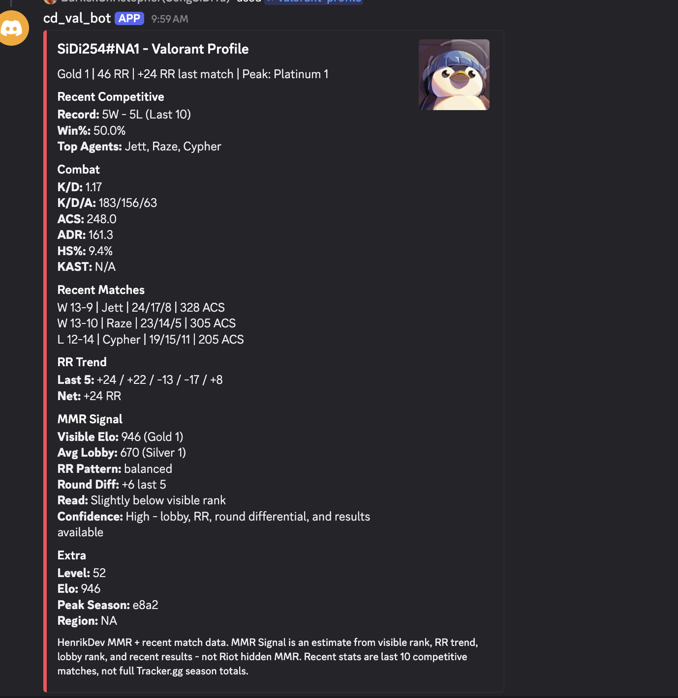

Featured project
Valorant Discord Bot
Discord bot for Valorant profile lookup, recent competitive match analysis, RR tracking, and API-driven player statistics.

Overview
Built a Discord.js bot that uses slash commands and the HenrikDev Valorant API to fetch player profile data, rank, RR changes, recent match history, combat stats, and estimated MMR signals. The bot formats the results into a Discord embed for quick competitive performance review.
Highlights
- Discord slash command interface
- Valorant profile lookup
- Recent competitive match summary
- RR trend tracking
- Rank and peak rank display
- Agent usage summary
- Combat statistics: K/D, ACS, ADR, HS%, K/D/A
- MMR signal estimate using visible rank, lobby rank, RR trend, and recent results
- HenrikDev API integration
- Error handling for missing or invalid profiles
- Node.js backend command structure
Process
Integrated the HenrikDev Valorant API to fetch player account data, MMR history, match results, and combat statistics in parallel using Promise.allSettled. Built Discord slash command handlers with input validation, deferred replies, and graceful error recovery. An experimental pipeline sidecar enriches profiles with damage delta data when the API provides it.
Outcome
The bot delivers rich embedded player profiles in Discord — rank, RR trend, peak rank, recent match record, combat stats, and an estimated MMR signal. The MMR signal is derived from visible rank, lobby rank average, RR pattern, and recent results; it is not Riot's hidden MMR. The project demonstrates applied backend architecture, asynchronous API orchestration, and command-driven interface design.